In support of the research given, I focused on the following: 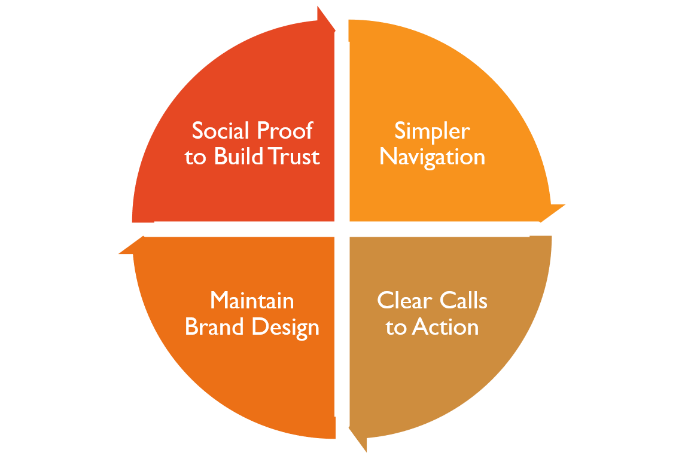
Roles
- UX Design
- Visual Design
- UX Writer
Deliverables
- User Stories
- User Flows
- Prototype
- Visual Design
Specifications
Duration
- 3 weeks
Tools & Software
User Research
Some user research had been performed prior to my contracted position to identify key pain points.
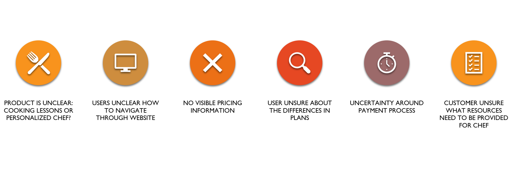- Product is unclear: cooking lessons or personalized chef?
- Site navigation confusing
- No visible pricing info
- Booking process unclear
- Unsure what resources chef needs
User Personas
Based on the user research that had been conducted, I developed the following user personas to help guide the visual design.

Working Parent
Motivation
Provide healthy and quick meal prep for family
Spend less time in the kitchen and more time with family
Frustration
Don't know what groceries to buy
Lack of time and resources
Inexperience in the kitchen
Young Professional
Motivation
Cheaper/healthier to meal prep
Can create something can't find at restaurant
Frustration
Cleaning up takes time
Wants more variety in meals
Working Parent
Motivation
Provide healthy and quick meal prep for family
Spend less time in the kitchen and more time with family
Frustration
Don't know what groceries to buy
Lack of time and resources
Inexperience in the kitchen
Young Professional
Motivation
Cheaper/healthier to meal prep
Can create something can't find at restaurant
Frustration
Cleaning up takes time
Wants more variety in meals
User Flows
Onboarding
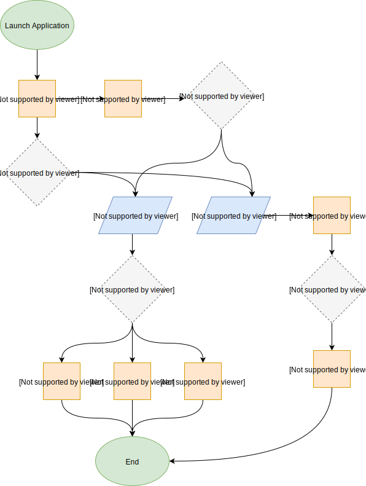Sketches
While developing the mock-ups of Pocket Chefs, I played around with the placement of brand colors and images that would best fit the desired aesthetic.
Landing Page
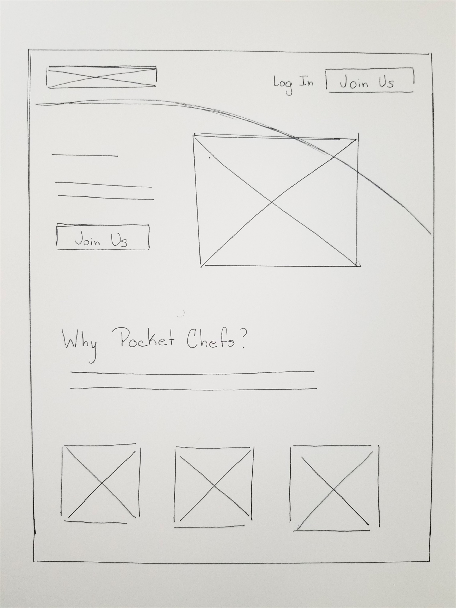 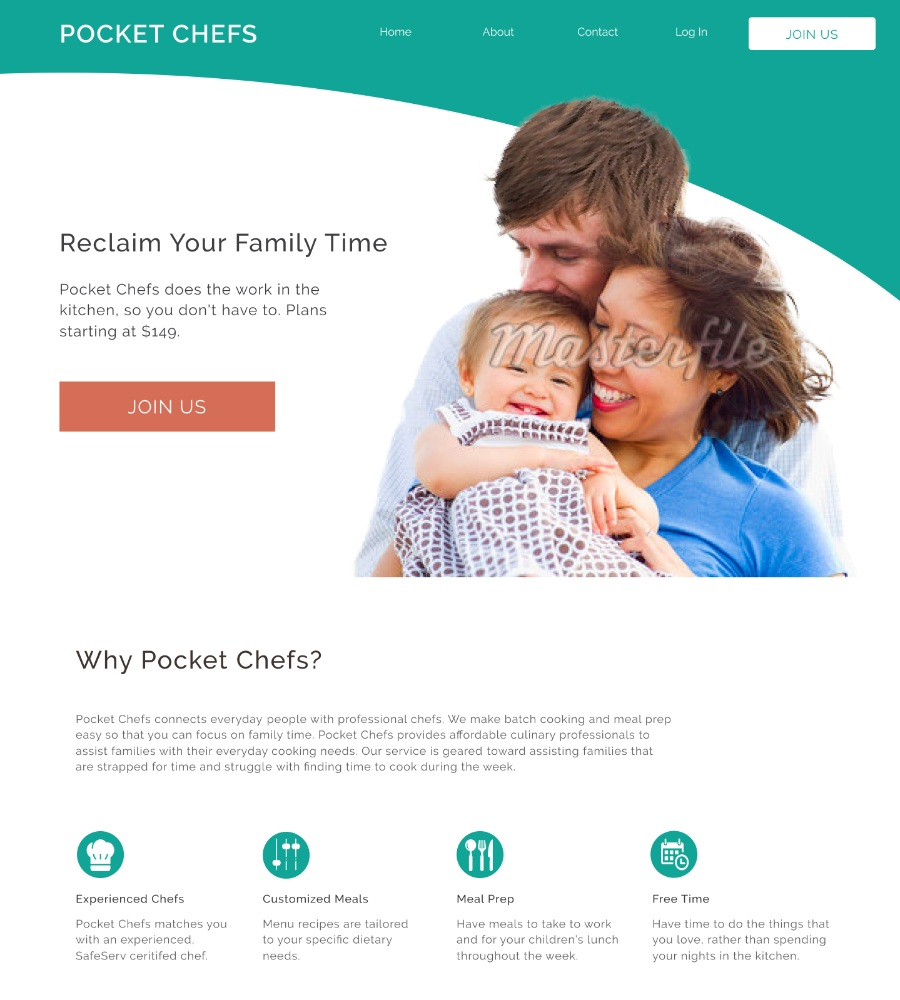Account Page
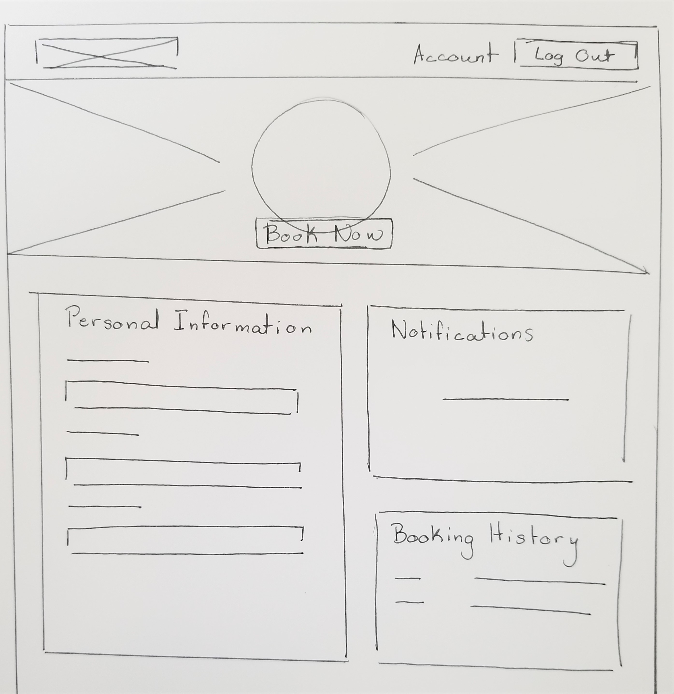 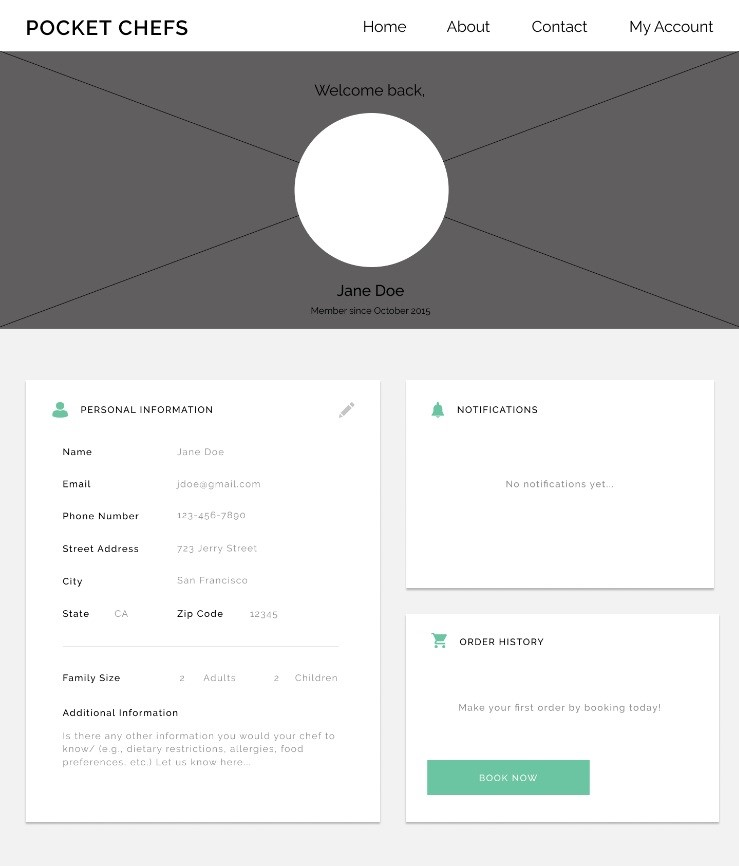Pricing Page
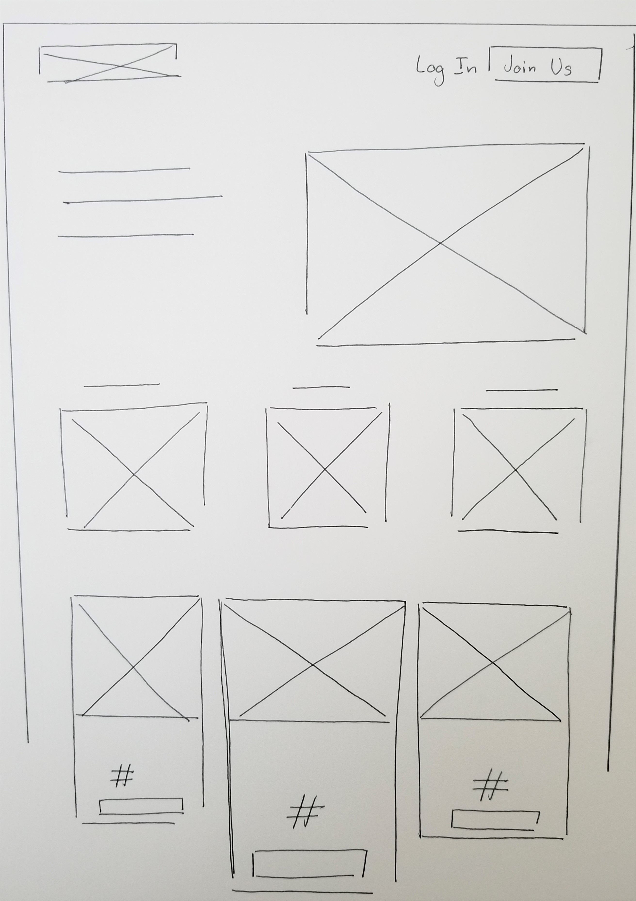 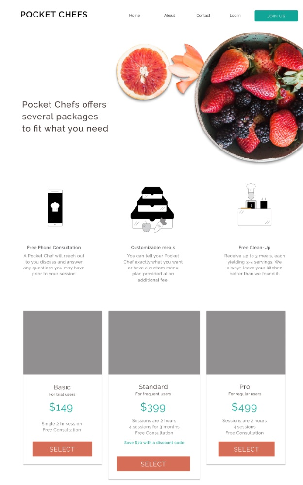Testing
I tried to incorporate as much user testing on my designs for Pocket Chefs despite time constraints to ensure a viable product. Through user interviews, the majority of the feedback I received concerned the copy.
I noted that many participants had questions about the difference between packages. So, I decided to chunk information into more manageable pieces of information for cognitive processing.
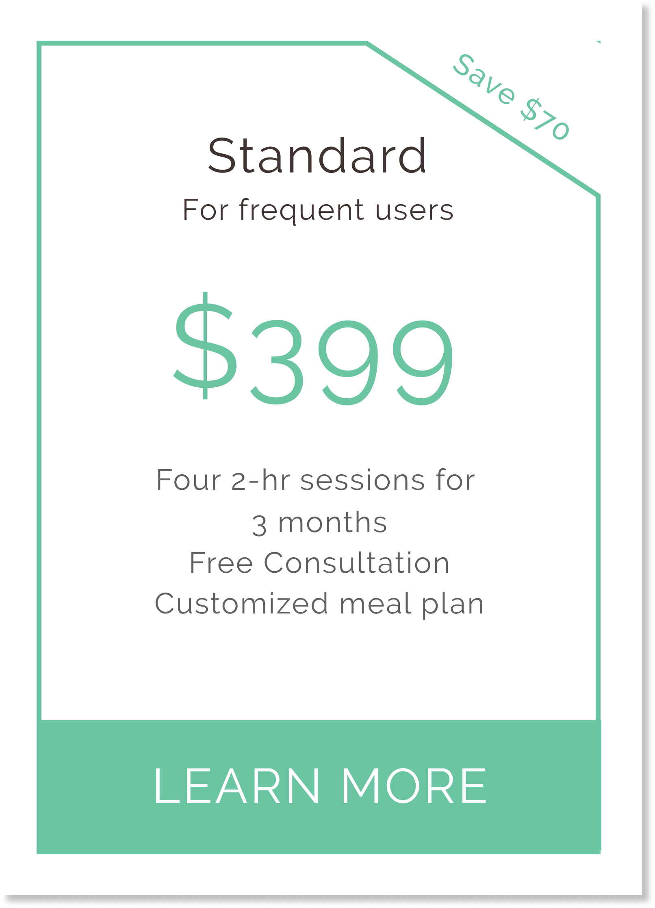
Final Design
The booking process and pricing information is displayed on the landing page, requiring no navigation as in the previous design. There is a call-to-action provided above the fold.
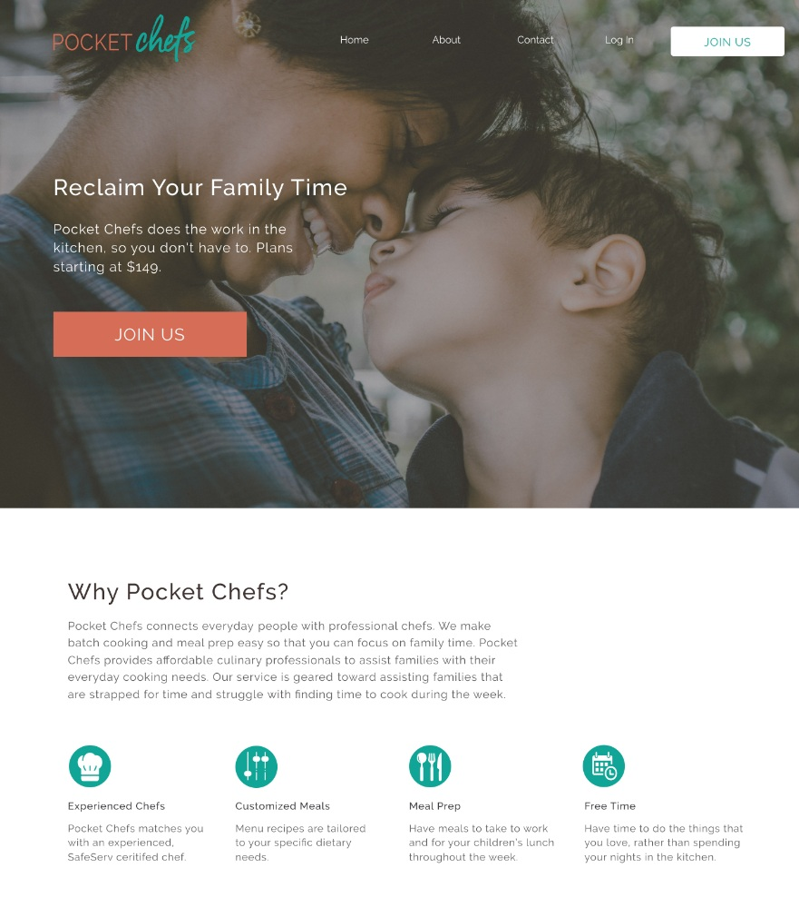Users can get more information and view special packages on a separate webpage. Frequently asked questions are available on the same page..
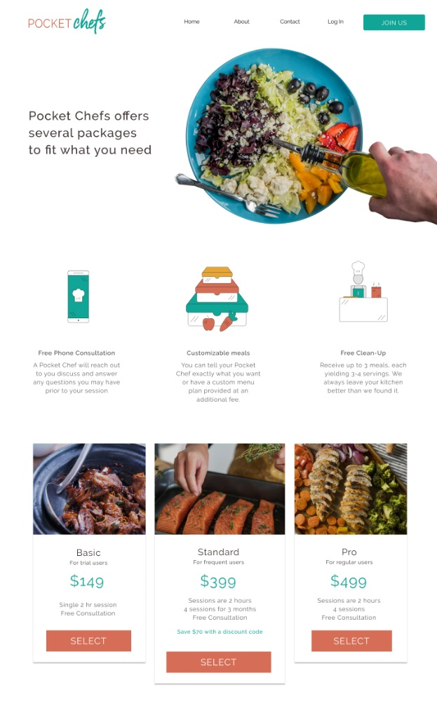New users prompted to join and directed to waitlist. Given confirmation that provides social proof and gives users agency to improve place in line.
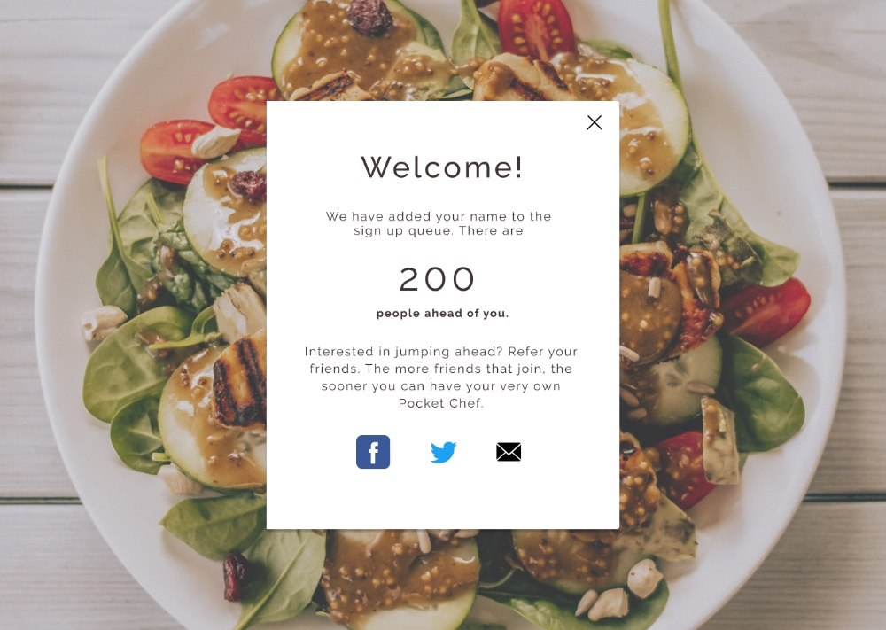Registered users able to edit account settings and view bookings clearly across all platforms. Added preferences input for personalized service.
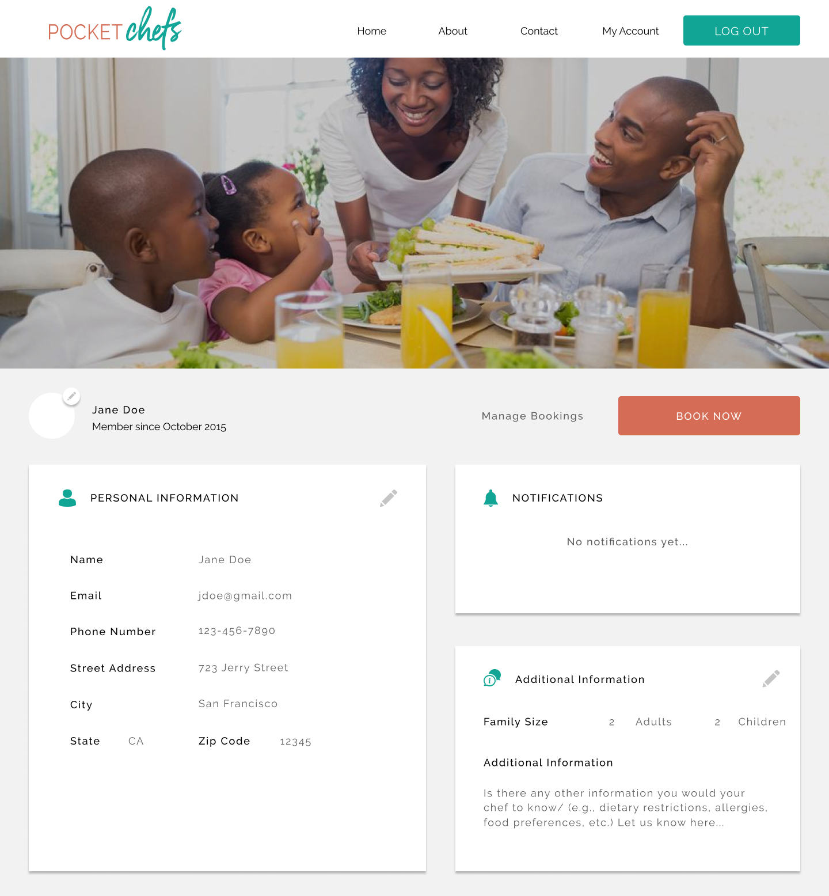Final Thoughts
The major challenge with this project was the time constraints, which limited my ability to do thorough user research and testing and really engage with the results. Thankfully, some research was already available to help determine the direction of the visual design and establish the proper user stories and flows. This being the first project in which I was not involved in the research process, it was sometimes a challenge for me to interpret the results. This was compounded by the fact I was working remotely and had limited access to those that did the research component.
Overall however, this was a fun and engaging project that challenged my visual design skills and my ability to communicate my process to a non-designer. Also, for the first time, I got the opportunity to look deeply at copy and UX writing!